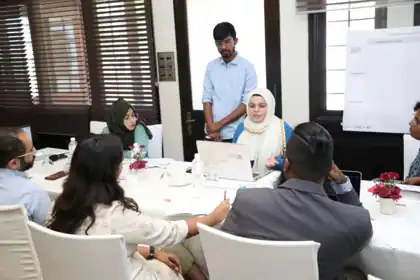

Plans often exist beside each other rather than with each other.
Urban master plans, climate adaptation plans and sectoral documents can run on different timelines through different institutions.
KEY IDEA / INSTITUTIONAL HOOKA policy conversation is useful only when its ideas survive the room. While working with ICCCAD, I contributed to organizing and coordinating a regional Policy Lab in Colombo, participated in the working sessions, and helped carry the emerging policy ideas into published writing.

Researchers, practitioners and policy actors from across South Asia.
ICCCAD · Transitions Research · Colombo Urban Lab · PARL
Urban implementation raised questions that were much more complicated than identifying a technically sound green intervention.
The Policy Lab was built around these practical tensions: how urban NbS can move from an attractive concept into planning systems, institutions and decisions without treating equity as an afterthought.

Reserved for the second portrait-format working-session photograph supplied for this case study.
Different planning systems. Different institutional capacities. Different urban pressures. Shared questions around climate resilience, equity and implementation.
Across the discussions, four themes kept returning.
Urban master plans, climate adaptation plans and sectoral documents can run on different timelines through different institutions.
KEY IDEA / INSTITUTIONAL HOOKEcological baselines, ecosystem-service valuation, resilience dividends and cost-benefit analysis all came into the conversation.
KEY IDEA / EVIDENCE → DECISIONGovernment, private-sector actors, NGOs and civil society need the skills and institutional capacity to understand, design and implement NbS.
KEY IDEA / CAPACITATEPublic, private and blended approaches depend on stronger evidence, clearer ownership and credible implementation pathways.
KEY IDEA / FINANCENature-based solutions are often discussed through environmental benefits: cooling, flood management, biodiversity, water management and urban greening.
But those benefits are not automatically distributed fairly. Embedding equity means asking who has influence over the intervention and whether communities facing the greatest risks are meaningfully included in the planning process.
The important shift was from “What did people say?” to “What does this reveal about the policy conditions required for urban NbS?”
The article carried the Policy Lab conversation beyond the event itself. Rather than presenting NbS as a catalogue of individual interventions, it focused on the policy conditions needed to make those interventions meaningful at an urban scale.
Read the ICCCAD article ↗Reserved for the official publication screenshot with title and date visible.
Reserved for the official ICCCAD author-section screenshot.
Supported the organization and coordination of the regional Policy Lab in Colombo.
Participated in discussions examining equity, planning, institutional arrangements and implementation.
Worked with emerging themes and insights to identify recurring policy questions and pathways.
Contributed to developing the resulting ICCCAD publication.
Helped translate a multi-stakeholder discussion into a structured narrative that could travel beyond the room.
Connect climate, urban and sectoral planning documents.
Build credible ecological, social and economic evidence for decisions.
Who participates and who benefits?
Strengthen the institutions and people expected to implement NbS.
Support implementation beyond isolated pilots.
A Policy Lab can generate dozens of perspectives, examples and disagreements. A publication cannot reproduce all of them. The research task is to identify what connects them.
For me, this project reinforced a broader principle: research communication is not the final stage of research. It is part of the process that determines whether research can travel.